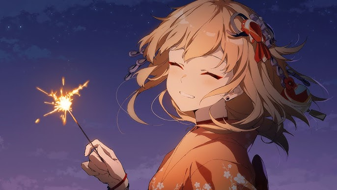

My Waifu Yoimiya
《Genshin Impact》Yoimiya -Sketch Animation「Fireworks are for now, but friends are forever」by Miota
Naganohara Yoimiya (Japanese: 長なが野の原はら宵よい宮みや Naganohara Yoimiya) is a playable Pyro character in Genshin Impact. Yoimiya is the current owner of Naganohara Fireworks; with her colorful fireworks and outgoing personality, Yoimiya is loved by everyone on Narukami Island. She was coined as the "Queen of the Summer Festival," as they believe summer is not the same without her.